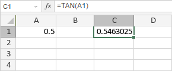

TAN Funkcija
TAN funkcija je jedna od matematičkih i trigonometrijskih funkcija. Koristi se da vrati tangens ugla.
Sintaksa
TAN(number)
TAN funkcija ima sledeći argument:
| Argument | Opis |
|---|---|
| number | Ugao u radijanima za koji želite da izračunate tangens. |
Napomene
Kako primeniti TAN funkciju.
Primeri
Slika ispod prikazuje rezultat koji vraća TAN funkcija.
